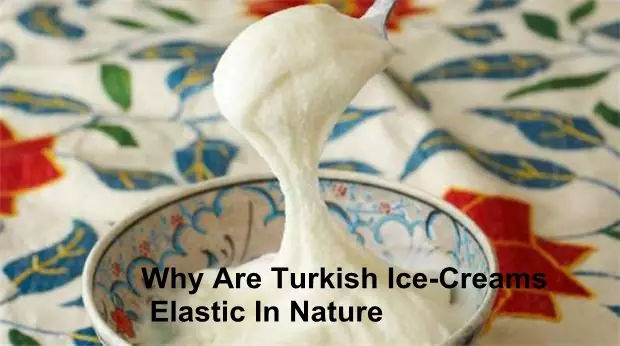

概述
全世界只有两种冰淇淋，是以它们的发源地命名，一种是罗马冰淇淋，一种是马拉许冰淇淋。马拉许位于土耳其东南部，最具代表性的品牌是MADO，即马拉许（Maras）和土耳其语中冰淇淋（Dondurma）的缩写。
用刀叉吃的冰淇淋——MADO
土耳其冰淇淋堪称世界上最坚韧、最有嚼劲的冰淇淋.国际通用的叫法（准确来说是土耳其语的叫法），叫做「dondurma」.译成汉语的叫法，则是「咚哆玛」这是一组拟声词，是制作冰淇淋时打击器皿所发出声响，同时也是代表了美味、欢乐、分享和坚持不懈。
土耳其冰淇淋比普通冰淇淋更耐嚼一些，有点像奶糖，有时候吃起来甚至需要刀叉帮忙。它不易融化，也不会冻住。乳糖含量比牛奶冰淇淋要低一些。
品尝MADO冰淇淋的三个关键词
1、羊奶
但凡嘴刁的人，对MADO冰淇淋的第一反应是：“一定不是牛奶做的。”它的丰厚柔滑和淡淡奶香，柔软细腻得仿佛在品尝自己的舌头。这是MADO的第一个特别之处———用羊奶制作。
神话中，牧羊人安迪密恩为了与希腊月神瑟莉妮幽会而忘记了挤羊奶，恣意横流的羊奶覆盖了整座丘陵，形成了土耳其棉花堡。土耳其的羊奶几乎可充当他们的国宝了。土耳其对羊奶的制作也有延续千年的心得，他们用特有方法去除羊奶的膻味，同时保留羊奶中的天然营养。而羊奶的脂肪含量也比一般冰淇淋低。
2、打糕
有人形容土耳其雪糕的味道好像麻薯，事实上，它的制作过程也让人想起打年糕，充满趣味。土耳其冰淇淋制作时不加水，并且要对冰淇淋不停地敲打，通过持久地敲打和揉捏，增加其黏性。故而土耳其冰淇淋可以说是世界上最硬的冰淇淋，有点像奶糖，而且不易融化，也不会冻结。因此有人说，土耳其冰淇淋是唯一能用刀叉吃的冰淇淋。
3. 兰茎粉
令MADO冰淇淋坚韧到可以用刀叉来吃的魔术，叫做兰茎粉。这是一种用野兰花的球根磨制的土耳其珍贵食材，煮羊奶的过程中被加入。它含有大量天然胶质，增加了雪糕的黏性，格外坚韧。日本有一种白芨，保加利亚有一种叫做多良树的根部，当地人用来做优格，放一把在牛奶中，阴凉处放置6小时，牛奶就会凝固，与兰茎粉异曲同工。
以吃牛扒的架势拆分冰淇淋，吃冰淇淋从来没有如此优雅而郑重其事。拿不准是否遇到正宗土耳其冰淇淋的时候，不妨以刀叉检测。切割手感与四分熟的牛扒也有几分相似，同样都是韧中带软，温柔而坚韧。更神奇的是，居然还可以用叉子叉起来。羊奶冰淇淋口感温润，甜味中略有微酸，让人想起乳酪，继而发觉自己仿佛陷入柔滑的流沙中，丝毫无力自拔。
MADO冰淇淋搭配传统土耳其红茶或土耳其咖啡